3. A Quick (and Hopefully Painless) Ride Through Python (with Cartoon Foxes)
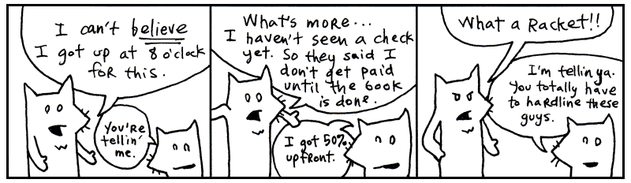
Yeah, these are the two. My asthma’s kickin’ in so I’ve got to go take a puff of medicated air just now. Be with you in a moment.
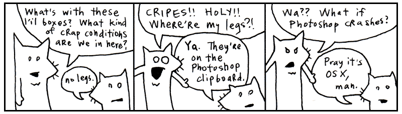
I’m told that this chapter is best accompanied by a rag. Something you can mop your face with as the sweat pours off your face.
Indeed, we’ll be racing through the whole language. Like striking every match in a box as quickly as can be done.
Language and I MEAN Language
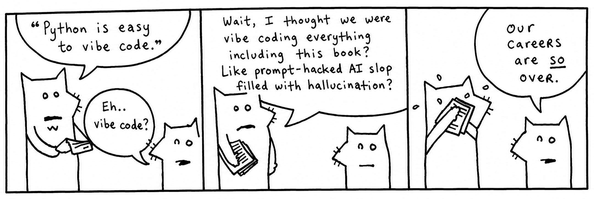
My conscience won’t let me call Python a computer language. That would imply that the language works primarily on the computer’s terms. That the language is designed to accommodate the computer, first and foremost. That therefore, we, the coders, are foreigners, seeking citizenship in the computer’s locale. It’s the computer’s language and we are translators for the world.
But what do you call the language when your brain begins to think in that language? When you start to use the language’s own words and colloquialisms to express yourself. Say, the computer can’t do that. How can it be the computer’s language? It is ours, we speak it natively!
We can no longer truthfully call it a computer language. It is coderspeak. It is the language of our thoughts.
Read the following aloud to yourself.
In English sentences, punctuation (such as periods, exclamations, parentheses) are silent. Punctuation adds meaning to words, helps give cues as to what the author intended by a sentence. So let’s read the above as: print “Ho, Why Is You Here?” times five.
Which is exactly what this small Python program does. Flo Milli’s existential question will print five times on the computer screen.
Read the following aloud to yourself.
Here we’re doing a basic reality check. Our program asks if (the condition) aura is in the word restaurant. Again, in English: _if aura is in the word restaurant.__
Ever seen a programming language use English so effectively? Python uses colons and indentation to introduce new code blocks, enhancing the readability of the code. We’re checking a condition in the above code, so why not make that easy to read?
Read the following aloud to yourself.
While this bit of code is stretched out into two lines so more compelx than the previous examples, reading out loud, we get an idea of what the output will look like. Python reads like English. Fully translated into English, you might read the above as: for the words ‘toast’, ‘cheese’, and ‘wine’, print each word capitalized.
The computer then courteously responds: Toast, Cheese and Wine.
At this point, you’re probably wondering how these words actually fit together. Smotchkkiss is wondering what the dots and brackets mean. I’m going to discuss the various parts of speech next.
All you need to know thus far is that Python is basically built from sentences. They aren’t exactly English sentences. They are short collections of words and punctuation which encompass a single thought. These sentences can form books. They can form pages. They can form entire novels, when strung together. Novels that can be read by humans, but also by computers.
The Parts of Speech
Just like the white stripe down a skunk’s back and the winding, white train of a bride, many of Python’s parts of speech have visual cues to help you identify them. Punctuation and capitalization will help your brain to see bits of code and feel intense recognition. Your mind will frequently yell Hey, I know that guy! You’ll also be able to name-drop in conversations with other Pythonists.
Try to focus on the look of each of these parts of speech. The rest of the book will detail the specifics. I give short descriptions for each part of speech, but you don’t have to understand the explanation. By the end of this chapter, you should be able to recognize every part of a Python program.
Variables
Any plain, lowercase word is a variable in python. Variables may consist of letters, digits and underscores.
x, y, banana2 or phone_a_quail are examples.
Variables are like nicknames. Remember when everyone used to call you Ham Bone Baby? People would say, “Get over here, Ham Baby!” And everyone miraculously knew that Ham Baby was you.
With variables, you give a nickname to something you use frequently. For instance, let’s say you run an orphanage. It’s a mean orphanage. And whenever Daddy Warbucks comes to buy more kids, we insist that he pay us one-hundred twenty-one dollars and eight cents for the kid’s teddy bear, which the kid has become attached to over in the darker moments of living in such nightmarish custody.
Later, when you ring him up at the cash register (a really souped-up cash register which runs Python!), you’ll need to add together all his charges into a total.
Those variable nicknames sure help. And in the seedy underground of child sales, any help is appreciated I’m sure.
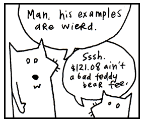
Numbers
The most basic type of number is an integer, a series of digits which can start with a plus or minus sign.
1, 23, and -10000 are examples.
Commas are not allowed in numbers, but underscores are. So if you feel the need to mark your thousands so the numbers are more readable, use an underscore.
Python reads this exactly as 12000000000.
Decimal numbers are called floats in Python. Floats represent real numbers using a decimal place or scientific notation.
3.14, -808.08 and 12.043e-04 are examples.
Strings
Strings are any sort of characters (letters, digits, punctuation) surrounded by quotes. Both single and double quotes are used to create strings.
"sealab", '2021', or "These cartoons are hilarious!" are examples.
When you enclose characters in quotes, they are stored together as a single string.
Think of a reporter who is jotting down the mouth noises of a rambling celebrity. "I have been to certain concerts and certain festivals where people wear diapers so that they can be front row of the show," says Olivia Rodrigo, "and that's been an experience as a performer that I have smelled."
olivia_diaper_quote = I have been to certain concerts and certain festivals where
people wear diapers so that they can be front row of the show, and that's been an
experience as a performer that I have smelled."
So, just as we stored a number in the teddy_bear_fee variable, now we’re storing a collection of characters (a string) in the olivia_diaper_quote variable. The reporter sends this quote to the printers, who just happen to use Python to operate their printing press.
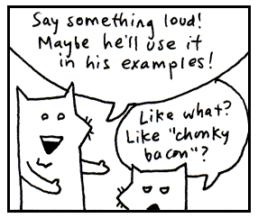
Functions
If variables are the nouns, then methods are the verbs.functions are just like methods that are more free. To a non-programmer, a function appears like magic. You call it and something magically falls out.
But a functions are not magical but more like a magicians rabbit. They hop around and give you something you need. Seeing inside the funciton, is like peeking into the magicians hat where he keeps all his secrets and props.
In Python, functions to group together code. We use the def keyword to define a new function. The code that follows is indented so that Python knows it belongs to the function. Think of the
def keyword as the lip of the magic hat and the indented code as the hat's contents.
def hop_for_carrots():
# Indented code block for the function body (inside the magician's hat)
print("hopping around")
return "carrots"
There are also built-in functions like print() and len() that can be used anywhere.
Just like a magicians tricks up his sleeve, functions are rather impermanent in nature. Any variable created in function disappears when the function is done.
def hop_for_carrots(): # Entering the function
hopping = True
return "carrots"
hop_for_carrots()
print(hopping) # Pulls an error: `NameError: name 'hopping' is not defined`. Poof. The inner
# variable won't leak outside the magicians hat.
Function Arguments
A method may require more information in order to perform its action. If we want the function to bring us carrots, we should provide how many carrots we want.
Function arguments are attached to the end of a method. The arguments are usually surrounded by parentheses and separated by commas.
hop_for_carrots( 3 , "fast")
The above asks for 3 carrots and demands them fast.
Think of the arguments as an inner tube the method is pulling along, containing its extra instructions. The parentheses form the wet, round edges of the inner tube. The commas are the feet of each argument, sticking over the edge. The last argument has its feet tucked under so they don’t show.
Like a boat pulling many inner tubes, methods with arguments can be chained.
hop_for_carrots( 3 , "fast").wash( 30 ).peel()
The above asks for 3 carrots and demands them fast, washes them for 30 seconds, and peels the carrots. Even though the last method has no arguments, you still must use parentheses to distinguish between calling the function (pulling the rabbit out of the hat) and referencing the function objects (the magicians hat itself).
Some methods (such as print) are part of the builtins module. These methods are used throughout Python. Since they are so common, they are automatically defined for you and always available to use.
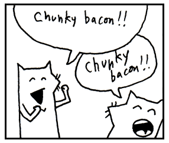
Classes
Classes are the blueprints we use to to create objects. By style convention, user created classes are capitalized in Python.
- Class = the blueprint e.g. Door
- object = the thing made e.g. front_door
We can think of a class as a factory that has become expert in churning out objects. In this case, for the Door 'factory' will make a new door, but needs to know what type of door to create.
As seen above, we ask Python to create a new Door and pass in type 'oak'. A new door is created using a special init or initializing class method. Python has to have an understanding of how to make a door—as well as a wealth of timber, lumberjacks, and those long, wiggly, two-man saws.
Methods
Methods look just like functions. In fact they are functions! They are just functions created inside a class. Methods are usually attached to the end of objects variables by a dot and are followed by parentheses. You’ve already seen methods at work.
In the above, open is the method. It is the action, the verb. In some cases, you’ll see actions chained together.
We’ve instructed the computer to open the front door and then immediately close it.
The above is an action as well. We’re instructing the computer to test the door to see if it’s open.
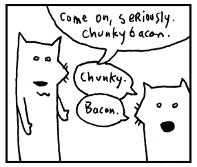
Class Method and Constructors
While regular methods are bound to a specific object front_door.open(), class methods are bound directly to the class itself Door.french(). The most common use case for a class method is as a "factory method." This offers an alternative way to create objects when the standard init constructor isn't ideal.The syntax to call one is ClassName.method_name().
For example, in a Pony factory class, you might call a my_little() class method to create a magical flying pink pony. In a Door factory class, you might call a fort_knox() class method to build an extra-secure door to protect your chunky bacon.
secure_door = Door.fort_knox() # at 22,000 kilograms, these thick steel barriers
# are enough to protect all your chunky bacon.
Method arguments
A method, just like a function may require more information in order to perform its action. If we want the computer to paint the door, we should provide a color as well.
Method arguments are attached to the end of a method with parentheses just like function arguments.
The above paints the front door 3 coats of red.
Because a method is just a special type of function, we can chain them, just like we did before.
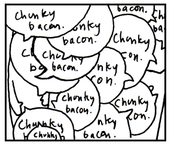
Instance and Class variables
Variables in objects, also known as instance variables, belong to that objects. You can
think of objects as little houses. You walk in and they have their own variables.
Python defaulting to local varaibles most of the time is very appropriate. In one house,
you may have a dad that represents Archie, a traveling salesman and skeletoncollector.
In another house, dad could represent Peter, a lion tamer with a great love for flannel.
Each house has its own meaning for dad.
Instance variables define an attribute of something that's attached to one of these houses.
Let's say we go into one of those little house that has become abandonded and meet a ghost dad.
We don't want to confuse ghost dad with Archie or Peter. We want to make sure ghost dad haunts
only that spooky abandonded house at the end of Maple street. So we use self to tie the dad
to the house.
class House:
def __init__(self, dad_name):
# Instance variable: Unique to each instance
self.dad = dad_name
def who_your_dad():
return self.dad
spooky_house = House('ghost dad')
spooky_house.who_your_dad() # 'ghost dad'
Now you see the instance variable dad is specific to spooky_house. Any new
house won't be associated ghost dad. Instance variables use are use to make sure
characteristics belong only to a single object (house) in Python.
class Door:
def __init__(self, width, height, color):
# Instance variable: Unique to each instance
self.width = width # in feet
self.height = height # in feet
self.color = color
def dimensions(self):
return self.width, self.height
def color(self)
return self.color
spooky_door = Door(3,7,'black')
tiny_door = Door(1,3,'blue')
# spooky_door has its own instance variables, so is not effected by tiny_door
print(spooky_door.color()) # 'black'
print(spooky_door.dimensions()) # (3, 7)
Class variables, too, are used to define attributes, but rather than defining an attribute for a single object in Python, class variables share an attribute with many related objects of the same class in Python.
class Door:
# Class Variables: Shared by ALL doors
WARRANTY_YEARS = 2
WARRANTY_FINE_PRINT = "Money back guarantee void for French or Polish doors."
List
Lists are surrounded by square brackets and separated by commas.
[0, 1, 2, 3]is an list of numbers.['coat', 'mittens', 'snowboard']is an array of strings.
Think of it as a caterpillar which has been stapled into your code. The two square brackets are staples which keep the caterpillar from moving, so you can keep track of which end is the head and which is the tail. The commas are the caterpillar’s legs, wiggling between each section of its body.
Once there was a caterpillar who had commas for legs. Which meant he had to allow a literary pause after each step. The other caterpillars really respected him for it and he came to have quite a commanding presence. Oh, and talk about a philanthropist! He was notorious for giving fresh leaves to those less-fortunate.
Yes, an list is a collection of things, but it also keeps those things in a specific order.
We can also include different data types in a list and nest lists.
[12, [11, 10] [9]]a nested list.`[42, "Hello World", True, [1, 2, 3]]a single Python list containing four different data types.
List Comprehension
Square brakets can also be used for list comprehension which lets us build lists in a single line. A list comprehension is a tiny factory hidden inside a pair of square brackets.
A list comprehension is much like a conveyor belt carrying a steady stream of objects past a worker. The worker doesn't stop to admire them or ask where they came from. He simply grabs each one, performs a small operation, and tosses it into a growing pile.
Imagine you work at a busy pizza shop and you are running a double toppings promo. You have a long list of pizza orders:
pizza_orders = ['chunky bacon','sausage','cheese','mushroom'] # pizza orders
and you want to double them. So you fire up your computer and write some topping doubling code.
promo_pizza_orders=[]
for pizza in pizza_orders: # Why did the toppings have to squeeze together on the pizza?
promo_pizza_orders.append('double ' + pizza) # There wasn't mush-room
With list comprehension, the above code can be shortened to just one concise line. We fire up the conveyer belt and slap a double sticker in double time:
promo_pizza_orders = ['double ' + pizza for x in pizza_orders] #list comprehension to double toppings
The list comprehension version is not tonly more concise, but is often a bit quicker.
Orders come in steady but we start runnning low on toppings. Boss asks if you can count how many chunky bacon orders came in so he can know if we will run out soon. "We got plenty of mozerella in the back but we are running low on chunky bacon."
We can do this by adding conditional logic to our list comprehensions.
count_chunky = len([pizza in pizza_orders if pizza.endswith('chunky bacon')) # count chunky bacon orders
In the above code we filter first for the chunky bacon pizza orders and we find the length of the list. We assign this length to the chunky_count variable.
Now, the obvious problems with double toppings is once you have them, no one wants to go back. Customers kept coming in and asking when was the next double toppings day.
Boss pulls me aside one day "Why, this time, we can't be giving away double prosciutto. Chunky bacon okay, but that prosciutto is imported from Tuscany, fuuggetaboutit. Just give em a lil' extra this time. They won't know the difference, capisce?" Proscuitto was robust, savory and had to be protected. Lucky for me, I did understand and Python did too.
promo_pizza_orders = ['lil extra ' + pizza if 'prosciutto' else 'double ' + pizza for x in pizza_orders]
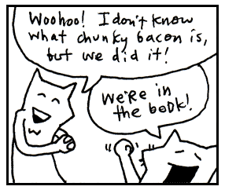
Parentheses
In Python, code is surrounded by parentheses for multiple reasons such as forming a function, calling a function, including function arguments, defining tuples, or grouping math, expressions, and code.
Here we can see various examples:
Defining: def greet(name):
Calling: greet("Alice")
Standard Tuple: my_tuple = (1, 2, 3)
Grouping Math: (3 + 4) * 10
Multi-line code:
if (user_authenticated
and user_has_permission
and account_is_active):
With parentheses, you can group a set of instructions together so that they can be understood as one line. When you see these two parentheses, remember that the code inside has been pressed into a single unit.
It’s like one of those little Hello Kitty boxes they sell at the mall that’s stuffed with tiny pencils and microscopic paper, all crammed into a glittery transparent case that can be concealed in your palm for covert stationery operations. Except that parentheses don’t require so much squinting.
Parentheses can also be used to create generator expressions. Generator expressions are just lazy version of list comprehennsions. They aren't evaluated until we ask for the result.
numbers = [1,2,3,4]
timesed_by_two = (x*2 for x in numbers) #generator expression with lazy evaluation
next(times_by_two) # 2
Lambda Function
Now, my friend Jimothy doesn't like cat buts loves clubbing. He goes on and on about the hottest new club, all I want to do is go home and watch Batman reruns and eat pickles. But he insists this new club is not like the last one. This one is so new it doesn't even have a name yet! "So there is no name?" I asked. "Yup, it's anonymous. It's a speakeasy, you have to know about it to get in."
Naturally, I was confused. "What should we call it when we talk about it?" "Why!" he replies. "Why?" I
reply back? He replies "Y!" only louder. We go round and round like this for a few minutes until he decides
he needs a symbol for the club as Y wasn't working. "Why not a little hat since it's a party." So we settled for λ or lambda, the 11th letter in the Greek alphabet, which looks just like a party hat when you have had enough drinks.
"HEY, BUT WAIT! Isn't λ already used for eigenvalue in linear alegbra?!!!" I warned my friend after a double soco and lime, but he just told me to shut up and threw my coat at me :(.
So for example, my friend x and me y are heading the anonymous club, we could write it like
this:
lambda x, y: x + " & " + y + "party"
In the example above, x and y are the arguments. And after the arguments, we have a bit of code.
What's it do? The code reads as the arguments x and y on the left side of the colon go in and
the expression on the right side of the colon, x + " & " + y + "Party" comes out.
anon_club = lambda x, y: x + " & " + y + " party"
print(anon_club('Jimothy', 'Why')) # Prints: Jimothy & Why party
So here what goes in are two arguments, and what comes out is the expression that declares that person x and person y Party.
The above code can be writen all in one line, if we use a parentheses to group together the lambda function and another parentheses for the function arguments.
(lambda x, y: x + " & " + y + " party")('Jimothy' , 'Why')
Here are a few more more familar examples:
add = lambda x, y: x + ymultiply = lambda x, y: x * ysubtract = lambda x, y: x - ydougie = lambda x, y: x ? y # note throws error because Python 3 (nor I) is not sure how to do the Dougie, check back with Python 4
Lambda functions can be a little tricky to understand, so if you don't get everything, don't worry, we'll go over them again later in more detail.
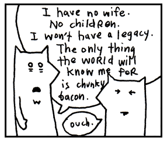
Ranges
A range is two values surrounded by parentheses and separated by an ellipsis (in the form of two or three dots).
range(5)is a range, representing the numbers 0,1,2,3,4.
A Python range is a bit like one of those long measuring tapes that snaps
back into its case when you're done using it. Stretch it out, and you can
see every mark along its length. Let go, and it collapses into a compact
package. Inside the parentheses, you specify either how long the tape
should be range(5), 5 is the stop value meaing the last value in the
range is 4.
Now, let's take a simple example with just the stop value.
Range of 5 pulls out a tape measure to the 5-inch mark.
0, 1, 2, 3, 4 or |0=1=2=3=4=|tape measure|
5 is the stopping point, not part of the measured length. It's the mark where your measure says, "That's far enough!"
We can also use two arguments, providing range(start, stop). For example, say
we want to start counting at 25 and count all the way up to 29 but exclude
the number 30, we could use range(25, 30). Just like a tape measure,
Python keeps the numbers neatly rolled up, including the first number (the
metal tab), but never including the second number which covered by the tape
measure.
Your tape measure would look something like this |25=26=27=28=29=|tape measure|. The last number gets cut off, so it doesn't get included in our sequence.
Return to our first example range(5). Did you notice in the sequence starts
from 0? Didn't we learn to count starting from 1 in kindergarden? Python
programmers are more efficient than kindergardeneres. Programmers looked at that
empty stretch of the tape measure between 0 and 1 and thought:
"There in the empty void is the meaning of life. I must include 0 in my counting."
Plus, counting from 0 is like a fun inside joke that only programmers get.
Python ranges, much like tape measure, are retractable. A list lays every number out on the floor for inspection, but a range keeps its numbers tucked neatly away until you ask for them. The collapsed tape lives in a surprisingly small container. To save space, ranges use with lazy evaluation. The results don't get evaluated until we ask for them.
june_bugs = list(range(2, 10))
print(june_bugs) # lazy evaluation, so we have to explicitly evaluate using list before printing
Python starts counting from 0 not just for ranges but for accessing elements in lists too, which is called indexing. The first index of a list is always at index 0 e.g. print(junebug[0]). It works the same with strings. For cat_language = "meow", we access the first letter like so: cat_language[0]. But we'll get more into that later in Chapter 4.
Oh, and by the way, did you know you can play hopscotch with a range? There is a
secret third argument (well not so secret anymore) that let's you leap over a
certain number of items in the sequence. We call it like this:
range(start, stop, step).
print[v + " " for v in range(0,10,2)] with a list comprehension.
The output is 0 2 4 6 8 as we count from 0 to 9, leaping over 1, 3, 5, 7, and 9.
We can slice a list the same way using extended slicing syntax list_name[start:stop:step].
Why on earth would you need to jump around like that? Ask Suzie who just performed a Jeté over the danger zonefor her teams win in Himmel und Hölle.
After playing hopscotch, you may think it's a good time for a nap.
BUT WAIT THERE'S MORE!
Dictionary
A dictionary in Python is surrounded by curly braces. Dictionaries match words with their definitions. Python does so with arrows made from an equals sign, followed by a greater-than sign.
{'a' : 'aardvark', 'b' : 'badger'} is an example.
The curly braces represent little book symbols. See how they look like little, open books with creases down the middle? They represent opening and closing our dictionary.
Imagine our dictionary has a definition on each of its pages. The commas represent the corner of each page, which we turn to see the next definition. And on each page: a word followed by an arrow pointing to the definition.
In the example above, I stored personal information for Peter, the lion tamer with a great love for flannel. Dictionaries are useful because they are very easy to search through.
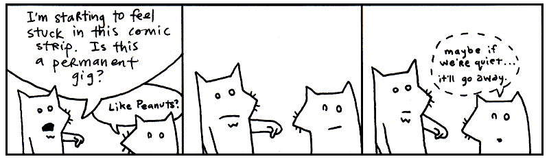
Regular Expressions
Regular expressions are used to find words or patterns in text. The slashes on each side of the expression are pins. The cool thing is that regular expression can be used across most programming languages. Regardless of the language, the basic building blocks of regular expressions ar virtually identical across all modern platforms.
A regular expression (or regexp) is a set of characters.
r"^\S+@\S+\.\S+$", "[0-9]+" and r"^\d{3}-\d{3}-\d{4}" are examples.
Imagine if you had a little word with pins on both side and you held it over a book. You pass the word over the book and when it gets near a matching word, it starts blinking. You pin the regular expression onto the book, right over the match and it glows with the letters of the matching word.
Oh, and when you poke the pins into the book, the paper sneezes, reg-exp!
Regular expressions are much faster than passing your hand over pages of a book. Python can use a regular expression to search volumes of books very quickly.
For example, the characters \d in a regex stand for a decimal digit between 0 and 9. We can use the regex string r"\d\d\d-\d\d\d-\d\d\d\d" to match a US phone number. We can shorten that to r"^\d{3}-\d{3}-\d{4}" which reads
as "three digits, a hyphen, three more digits, another hyphen, and four digits". However, this will not match,
a phone number written witih parentheses or without dashes. A more complete regex to match phone numbers would be: r"^\(?\d{3}\)?[-\s]?\d{3}[-\s]?\d{4}$" which matches all kinds of formats (123) 456-7890, 123-456-7890, and 1234567890 but not 123-4567-890 (wrong hyphen placement).
Operators
You’ll use the following list of operators to do math in Python or to compare
things. Scan over the list, recognize a few. You know, addition + and
subtraction - and so on.
** ~ * / // % + - &
<< >> | ^ > >= < <=
!= == is
in
not and or
+= -=
Keywords
Python has a number of built-in words, imbued with meaning. These words cannot be used as variables or changed to suit your purposes. Some of these we’ve already discussed. They are in the safe house, my friend. You touch these and you’ll be served an official syntax error.
False None True and as assert async await
break class continue def del elif else except
finally for from global if import in is
lambda nonlocal not or pass raise return try
while with yield
Good enough. These are the illustrious members of the Python language. We’ll be having quite the junket for the next three chapters, gluing these parts together into sly bits of (poignant) code.
I’d recommend skimming all of the parts of speech once again. Give yourself a broad view of them. I’ll be testing your metal in the next section.
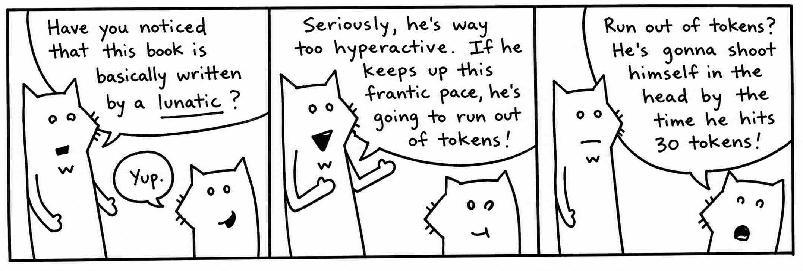
If I Haven't Treated You Like a Child Enough Already
I’m proud of you. Anyone will tell you how much I brag about you. How I go on and on about this great anonymous person out there who scrolls and reads and reads scrolls. “These kids,” I tell them. “Man, these kids got heart. I never…” And I can’t even finish a sentence because I’m absolutely blubbering.
Now didn't we say that python Programmers are more efficient than kindergardeneres?
But there isn't a Chapter 0 in this book, and no 0th of June. Why do we insist on
counting from 0? We count from 0 not because its cool and rebellious but also
practical too.
Jesse, an expert on 8-bit scrolls, doesn't understand why programmers count from 0. Are you going to believe some random guy on the internet who's name is a question? Fair pont Jesse, but we couldn't from 0 not because its cool and rebellious but also practical too.
To understand why most programming languages adopted this convention, we only need to look at memory. Counting from 0, makes storing the scroll a jiffy.
scroll = [0,1,1,1,0,1,1,1, \
0,1,1,0,1,0,0,0, \
0,1,1,1,1,0,0,1] # a list of bits, that is '`1's and '0's
import scrolls
ADDRESS = 1028 # store the data here
for offset in range(len(scroll)): # range counts starting from 0
memory[ADDRESS+offset] = scroll[offset]
| 1028 + 0 | 1028 + 1 | 1028 + 2 | 1028 + 3 | 1028 + 4 | 1028 + 5 | 1028 + 6 | 1028 + 7 |
|---|---|---|---|---|---|---|---|
| 0 | 1 | 1 | 1 | 0 | 1 | 1 | 1 |
You can see in the quick example that the first bit lives at 1028 with offest of 0, the second bit
lives at 1029 with offset of 1, and so on. The math when we count from 0 is just easier.
As an added bonus when counting starting at 0, we can easily find the track cycles.
We could also count how many scrolls like so: len(range(0, len(scroll), 8)) Note here we calculate the number of bytes. We get the by divided the list up in segements of 8 like so [byte0, byte1, byte2] and get the length, 3 bytes.
Now if we ever wanted to decode the scrolls to actually read them, we could quickly loop over them using list comprehensions.
import scrolls
#Group bits into bytes and convert them to strings. Then decimal code, character, and string
bytes_list = ["".join(str(b) for b in scroll[i:i+8]) for i in range(0, len(scroll), 8)]
decoded = "".join(chr(int(b, 2)) for b in bytes_list)
print(decoded)
int(byte_str, 2). This tells Python the string is a binary number (base-2) and ask for the corresponding integer (base-10). We then turn that into a character using the chr method.
Were you able to decode the secret message? All thanks to counting by 0!
Now that you learned how to count like a real programmers, my heart glows bright red under my filmy, translucent skin and they have to administer 10cc of JavaScript to get me to come back. (I respond well to toxins in the blood.) Man, that stuff will kick the peaches right out your gills!
So, yes. You’ve kept up nicely. But now I must begin to be a brutal schoolmaster. I need to start seeing good marks from you. So far, you’ve done nothing but move your eyes around a lot. Okay, sure, you did some exceptional reading aloud earlier. Now we need some comprehension skills here, Smotchkkiss.
Say aloud each of the parts of speech used below.
You might want to even cover this paragraph up while you read, because your eyes
might want to sneak to the answer. We have the built-in function print, then
parenthsis followed by a string "You Still Here, Ho? multiplied by 5.
Say aloud each of the parts of speech used below.
If you were paying attention during the big list of keywords, you’ll know that if
is a keyword and in is an operator. We ask if the string "aura" is in
the string "restaurant".
Say aloud each of the parts of speech used below.
Or if we were in a hurry, we could write it all in one line as such:
This caterpillar partakes of finer delicacies. An list starts this example.
In the list, three strings 'toast', 'cheese', and 'wine'. The whole
list is put through a for loop.
Inside of a loop, word, travels down its little
waterslide and the method capitalize then capitalizes the first
letter of each word, which has become variable food. This
capitalized string is passed to built-in method print so we can
see it on the screen.
In the one line example, we simply replace the for loop for a list comprehension. While it's a quick trick, list comprehensions reduce readability of the code significantly so are generally discouraged for anything complex.
Look over these examples once again. Be sure you recognize the parts of speech used. They each have a distinct look, don’t they? Take a deep breath, press firmly on your temples. Now, let’s dissect a cow’s eye worth of code.
An Example to Help You Grow Up
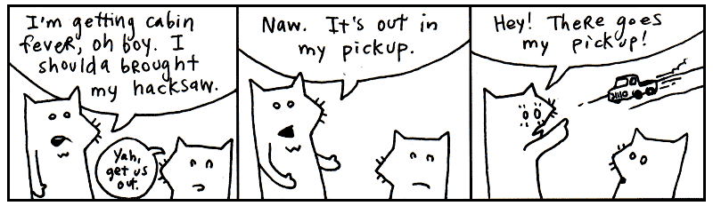
Say aloud each of the parts of speech used below.
The first line is an import statement. We have told Python to load some helper code, the request function so we can retrieve web pages from the Internet.
The next two lines go together. The function get is passed the URL "https://www.python.org/about/legal/" as response. Then the response is read and decoded into text. Finally the output is printed using the built-in print function.
Doing okay? Just out of curiosity, can you guess what this example does? Hopefully, you’re seeing some patterns in Python. If not, just shake your head vigorously while you’ve got these examples in your mind. The code should break apart into manageable pieces.
For example, this pattern appears several times:
_variable_ . _method_ ( _method arguments_ )
You see it inside the block:
response = request.get("https://www.python.org/about/legal/")
We’re using Python to get a web page. You’ve probably entered a URL with your web browser. URL is the Uniform Resource Locator or the address of your webpage. requests.get is used to sends an HTTP GET request to a web server and asks for a resource. Conceptualize a bus driver that can drive across the Internet and bring back web pages for us. On his hat are stitched the word get the method we called.
The variable response is holding the package the driver brought back. The dot text
we can think of a special version of a method. Notice it looks like a method but is not
followed by parentheses. Remember we talked about instance variables inside a method?
Well sometimes we want to access these variables fromt he outside. A property is just
a neat way to get and set this instance variable as if it were any other variable.
So here response.text, calls a getter method that opens the package, asks for its
contents, and returns the decode page contents as a string.
So, what does the entire code do? The code downloads the HTML text of the Python legal page and prints it to your terminal screen.
Specifically, the first line imports the tool needed to make web requests. The second s ends a GET request to the Python website over the internet using standard internet protocols (HTTP/HTTPS). And the final line fetches the webpage source code HTML in a string and prints it.
See how the basic dot-method pattern happens in a chain. The next chapter will explore all these sorts of patterns in Python. It’ll be good fun.
And So, The Quick Trip Came To An Eased, Cushioned Halt
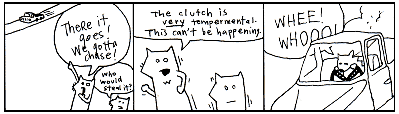
So now we have a problem. I get the feeling that you are enjoying this way too much. And you haven’t even hit the chapter where I use jump-roping songs to help you learn how to parse XML!
If you’re already enjoying this, then things are really going bad. Two chapters from now you’ll be writing your own Python programs. In fact, it’s right about there that I’ll have you start writing your own role-playing game, your own cloud network, as well as a program that will pull genuine random numbers from the void.
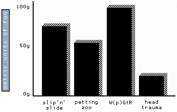
And you know (you’ve got to know!) that this is going to turn into an obsession. First, you’ll completely forget to take the dog out. It’ll be standing by the screen door, darting its head about, as your eyes devour the code, as your fingers slip messages to the computer.
Thanks to your neglect, things will start to break. Your mounds of printed sheets of code will cover up your air vents. Your furnace will choke. The trash will pile-up: take-out boxes you hurriedly ordered in, junk mail you couldn’t care to dispose of. Your own uncleanliness will pollute the air. Moss will infest the rafters, the water will clog, animals will let themselves in, trees will come up through the foundations.
But your computer will be well-cared for. And you, Smotchkkiss, will have nourished it with your knowledge. In the eons you will have spent with your machine, you will have become part-CPU. And it will have become part-flesh. Your arms will flow directly into its ports. Your eyes will accept the video directly from HDMI-Ultra96 cable. Your lungs will sit just above the AI GPU, cooling it.
And just as the room is ready to force itself shut upon you, just as all the overgrowth swallows you and your machine, you will finish your script. You and the machine together will run this latest Python script, the product of your obsession. And the script will fire up AI chainsaws to trim the trees, hearths to warm and regulate the house. Machine learning builder nanites will rush from your script, reconstructing your quarters, retiling, renovating, chroming, polishing, disinfecting. Mighty androids will force your crumbling house into firm, rigid architecture. Great LLM pillars will rise, statues chiseled. You will have dominion over this palatial estate and over the encompassing mountains and islands of your stronghold.
So I guess you’re going to be okay. What'dya say? Let’s get moving on this script of yours?